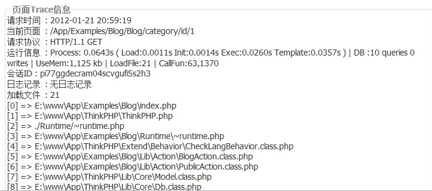
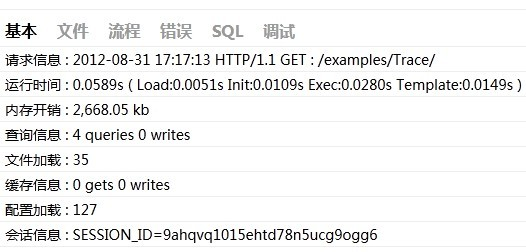

页面Trace功能是ThinkPHP提供给开发人员的一个用于开发调试的辅助手段。可以实时显示当前页面的操作的请求信息、运行情况、SQL执行、错误提示等，并支持自定义显示。
页面Trace功能无论是调试模式还是部署模式都有效，要开启页面Trace功能，需要在项目配置文件中设置：'SHOW_PAGE_TRACE' =>true, // 显示页面Trace信息系统默认的Trace信息包括：请求时间、当前页面、请求协议、运行信息、会话ID、日志记录和文件加载情况。默认的页面Trace的显示如图所示：

新版的页面Trace信息显示中已经包含了运行状态时间显示，所以开启页面Trace功能后无需再开启运行时间显示了。我们的建议是运行时间显示功能用于部署模式需要的时候开启。Trace页面定制
页面Trace信息的显示模板是可以定制的，默认位于系统目录的Tpl/page_trace.tpl，可以根据项目自身的需要定制，更改TMPL_TRACE_FILE进行配置即可。
例如：'TMPL_TRACE_FILE' => APP_PATH.'Public/trace.php'关键的输出代码是：<?php
$_trace = trace();
foreach ($_trace as $key=>$info){
echo $key.' : '.$info.'<br/>';
}Trace信息定制
如果需要扩展自己的Trace信息，有下面几种方式：
第一种方式：在当前项目的配置目录下面定义 trace.php 文件，返回数组方式的定义，例如：return array(
'当前页面'=>$_SERVER['PHP_SELF'],
'通信协议'=>$_SERVER['SERVER_PROTOCOL'],...
);在显示页面Trace信息的时候会把这个部分定义的信息合并到系统默认的Trace信息，所以不需要再添加系统默认的页面trace信息，这种方式通常用于Trace项目的公共信息。第二种方式：在Action方法里面使用trace方法来增加Trace信息，该部分可以用于系统的开发阶段调试。例如：trace('执行时间',$runTime);
trace('Name的值',$name);
trace('GET变量',dump($_GET,false));trace方法支持批量设置，例如：$info['执行时间']=$runTime;
$info['Name的值'] = $name;
$info['GET变量']=dump($_GET,false);trace($info);这种方式的trace信息显示在页面Trace信息的最开始。
3.1版本的页面Trace
3.1版本对页面Trace功能进行了增强，更加方便开发过程中的调试，并接管了一部分日志功能。使用
页面Trace功能是ThinkPHP框架为开发人员精心设计的一个方便调试的内置行为扩展工具，经历了多个版本的改进后，由开始的具备简单页面信息到现在的全面调试支持。
页面Trace功能分为两个层面：一、是页面Trace的显示界面；二、是提供调试支持的trace方法。
要开启页面Trace显示界面，需要开启SHOW_PAGE_TRACE参数：'SHOW_PAGE_TRACE'=>true该配置参数默认关闭。开启后，页面的右下角会出现TP的logo，点击即可打开页面Trace窗口。

页面Trace框架有6个选项卡，分别是基本、文件、流程、错误、SQL和调试，点击不同的选项卡会切换到不同的Trace信息窗口。
基本：当前页面的基本摘要信息，例如执行时间、内存开销、文件加载数、查询次数等等。
文件：详细列出当前页面执行过程中加载的文件及其大小。
流程：会列出当前页面执行到的行为和相关流程（待完善）。
错误：当前页面执行过程中的一些错误信息，包括警告错误。
SQL：当前页面执行到的SQL语句信息。
调试：开发人员在程序中进行的调试输出。
要在调试选项卡中显示调试信息，则是通过trace方法，该方法可以加到应用程序的任意位置，调用格式如下：
trace('调试变量','显示标签')
例如，
trace($user,'用户信息');
$user变量可能是一个用户信息数组，那么该变量的值就会显示到页面Trace窗口的调试选项卡中。
页面Trace的选项卡是可以定制和扩展的，默认的配置为：'TRACE_PAGE_TABS'=>array('base'=>'基本','file'=>'文件','think'=>'流程','error'=>'错误','sql'=>'SQL','debug'=>'调试')也就是我们看到的默认情况下显示的选项卡，如果你希望增加新的选项卡：用户，则可以修改配置如下：'TRACE_PAGE_TABS'=>array('base'=>'基本','file'=>'文件','think'=>'流程','error'=>'错误','sql'=>'SQL','debug'=>'调试','user'=>'用户')我们把刚才的用户信息调试输出到用户选项卡，trace方法的用法修改如下：
trace($user,'用户信息','user');
第三个参数表示选项卡的标识，和我们在TRACE_PAGE_TABS中配置的对应。
默认情况下，页面Trace窗口显示的信息是不会保存的，如果希望保存这些trace信息，我们可以配置PAGE_TRACE_SAVE参数：'PAGE_TRACE_SAVE'=>true开启页面trace信息保存后，每次的页面Trace信息会以日志形式保存到项目的日志目录中，命名格式是：
当前日期_trace.log
例如：12-06-21_trace.log如果不希望保存所有的选项卡的信息，可以设置需要保存的选项卡，例如：'PAGE_TRACE_SAVE'=>array('base','file','sql');设置后只会保存base、file和sql三个选项卡的信息。
3.1版本的trace方法不支持批量赋值操作。